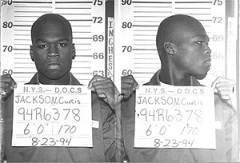

Tribute by: KYLE DUNGOG & HAREN BAYLOSIS
Curtis James Jackson III[2] (born July 6, 1975),[3] known professionally as 50 Cent,[n 1] is an American rapper, actor, television producer, and businessman. Born in the South Jamaica neighborhood of Queens, Jackson began pursuing a musical career in 2000, when he produced Power of the Dollar for Columbia Records; however, days before the planned release, he was shot, and the album was never released. In 2002, after 50 Cent released the mixtape Guess Who's Back? he was discovered by Eminem and signed to Shady Records, under the aegis of Dr. Dre's Aftermath Entertainment and Interscope Records.[5][6] His first major-label album Get Rich or Die Tryin' (2003), was a huge commercial success. The album spawned the Billboard Hot 100 number one singles "In da Club" and "21 Questions" (featuring Nate Dogg), and was certified 9× Platinum by the Recording Industry Association of America (RIAA). That same year, he founded G-Unit Records, signing his G-Unit associates Young Buck, Lloyd Banks and Tony Yayo; prior to becoming the de facto leader of the East Coast hip hop group G-Unit. 50 Cent had similar commercial and critical success with his second album, The Massacre (2005), which contained the single "Candy Shop" (featuring Olivia). He underwent musical changes by his fifth album, Animal Ambition (2014), and is currently working on his sixth studio album. He executive-produced and starred in the television series Power (2014–2020) and is slated to produce its spin-offs.[7] 50 Cent has sold over 30 million albums worldwide and won several awards, including a Grammy Award, a Primetime Emmy Award, thirteen Billboard Music Awards, six World Music Awards, three American Music Awards and four BET Awards.[8] As an actor, Jackson appeared in the semi-autobiographical film Get Rich or Die Tryin' (2005), the war film Home of the Brave (2006), and the crime thriller film Righteous Kill (2008). 50 Cent was ranked the sixth-best artist of the 2000s and the third-best rapper (behind Eminem and Nelly) by Billboard.[9] Rolling Stone ranked Get Rich or Die Tryin' and "In da Club" in its lists of the "100 Best Albums of the 2000s" and "100 Best Songs of the 2000s" at numbers 37 and 13, respectively.[10][11] In 2023, Billboard ranked 50 Cent the 17th best rapper of all time.[1
Jackson was born in the borough of Queens, New York City, and raised in its South Jamaica neighborhood[3] by his mother Sabrina. A drug dealer, Sabrina raised Jackson until she died in a fire when Jackson was 8.[13][14] Jackson revealed in an interview that his mother was a lesbian.[15][16] After his mother's death and his father's departure, Jackson was raised by his grandparents.[17] He began boxing at about age 11, and when he was 14, a neighbor opened a boxing gym for local youth. "When I wasn't killing time in school, I was sparring in the gym or selling crack on the strip," Jackson remembered.[18] He sold crack during primary school.[19] "I was competitive in the ring and hip-hop is competitive too ... I think rappers condition themselves like boxers, so they all kind of feel like they're the champ."[20] At age 12, Jackson began dealing narcotics when his grandparents thought he was in after-school programs,[21] and brought guns and drug money to school. In the tenth grade, he was caught by metal detectors at Andrew Jackson High School: "I was embarrassed that I got arrested like that ... After I got arrested I stopped hiding it. I was telling my grandmother [openly], 'I sell drugs.'"
On June 29, 1994, Jackson was arrested for selling four vials of cocaine to an undercover police officer. He was arrested again three weeks later, when police searched his home and found heroin, ten ounces of crack cocaine, and a starting pistol. Although Jackson was sentenced to three to nine years in prison, he served six months in a boot camp and earned his GED. He has said that he did not use cocaine himself.[17][23][24] Jackson adopted the nickname "50 Cent" as a metaphor for change.[25] The name was inspired by Kelvin Martin, a 1980s Brooklyn robber known as "50 Cent"; Jackson chose it "because it says everything I want it to say. I'm the same kind of person 50 Cent was. I provide for myself by any means."[26]
Jackson began rapping in a friend's basement, where he used turntables to record over instrumentals.[27] In 1996, a friend introduced him to Jam Master Jay of Run-DMC, who was establishing Jam Master Jay Records. Jay taught him how to count bars, write choruses, structure songs, and make records.[28][29] Jackson's first appearance was on "React" with Onyx, for their 1998 album Shut 'Em Down. He credited Jam Master Jay for improving his ability to write hooks,[20] and Jay produced Jackson's first (unreleased) album.[14] In 1999, after Jackson left Jam Master Jay, the platinum-selling producers Trackmasters signed him to Columbia Records. They sent him to an upstate New York studio, where he produced thirty-six songs in two weeks;[13] eighteen were included on his 2000 album, Power of the Dollar.[30] Jackson founded Hollow Point Entertainment with former G-Unit member Bang 'Em Smurf.[31][32] Jackson's popularity began to grow after the successful, controversial underground single "How to Rob", which he wrote in a half-hour car ride to a studio.[25][33] The track comically describes how he would rob famous artists. Jackson explained the song's rationale: "There's a hundred artists on that label, you gotta separate yourself from that group and make yourself relevant".[25] Rappers Jay-Z, Kurupt, Sticky Fingaz, Big Pun, DMX, Wyclef Jean, and the Wu-Tang Clan responded to the track,[33] and Nas invited Jackson to join him on his Nastradamus tour.[34] Although "How to Rob" was intended to be released with "Thug Love" (with Destiny's Child), two days before he was scheduled to film the "Thug Love" music video, Jackson was shot and hospitalized.[35] On May 24, 2000, Jackson was attacked by a gunman outside his grandmother's former home in South Jamaica. After getting into a friend's car, he was asked to return to the house to get some jewelry; his son was in the house, and his grandmother was in the front yard.[citation needed] Jackson returned to the back seat of the car, and another car pulled up nearby; an assailant walked up and fired nine shots at close range with a 9mm handgun. Jackson was shot in the hand, arm, hip, both legs, chest, and left cheek.[14][22][36] His facial wound resulted in a swollen tongue, the loss of a wisdom tooth and a slightly slurred voice;[22][34][37] his friend was wounded in the hand. They were driven to a hospital, where Jackson spent thirteen days. The alleged attacker, Darryl Baum, Mike Tyson's close friend and bodyguard,[38] was killed three weeks later.[39] Jackson recalled the shooting: "It happens so fast that you don't even get a chance to shoot back .... I was scared the whole time ... I was looking in the rear-view mirror like, 'Oh shit, somebody shot me in the face! It burns, burns, burns.'"[22] In his autobiography, From Pieces to Weight: Once upon a Time in Southside Queens, he wrote: "After I got shot nine times at close range and didn't die, I started to think that I must have a purpose in life ... How much more damage could that shell have done? Give me an inch in this direction or that one, and I'm gone".[17] Jackson used a walker for six weeks and fully recovered after five months. When he left the hospital he stayed in the Poconos with his girlfriend and son, and his workout regime helped him develop a muscular physique.[14][22][40] In the hospital Jackson signed a publishing deal with Columbia Records before he was dropped from the label and blacklisted by the recording industry because of his song, "Ghetto Qu'ran". Unable to work in a U.S. studio, he went to Canada.[41][42] With business partner Sha Money XL, Jackson recorded over thirty songs for mixtapes to build a reputation. In a HitQuarters interview, Marc Labelle of Shady Records A&R said that Jackson used the mixtape circuit to his advantage: "He took all the hottest beats from every artist and flipped them with better hooks. They then got into all the markets on the mixtapes and all the mixtape DJs were messing with them."[43] Jackson's popularity increased, and in 2002 he released the mixtape Guess Who's Back?. He then released 50 Cent Is the Future backed by G-Unit, a mixtape revisiting material by Jay-Z and Raphael Saadiq.
Made by: Kyle Dungog & HAREN BAYLOSIS
From: BSIT 1-B.